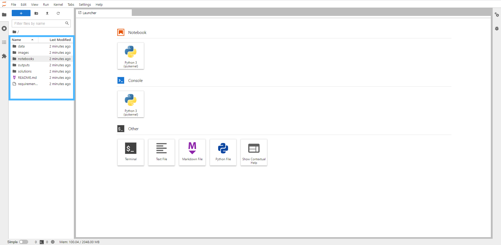

Binder - An Online Jupyter Notebook Alternative
Binder makes a Jupyter Notebook like interface available online and does not require Python or Jupyter to be downloaded to our personal or work machines. For best results it should be used with Chrome as it is not compatible with Microsoft Edge (a very common browser across public sector).
Whilst there are many working in public sector that do have some form of Python or Jupyter installed, this is not always the case and as such we provide this as an alternative. It is also useful for dealing with package or file errors that can result even when the software is natively downloaded (e.g unable to load in Excel files). However, please note that Binder is not a substitue for installing Python on your system, but a simple solution for delivering training.
Note - This binder repository (file collection) contains NO SENSITIVE information - and so falls within acceptable use within Government. Please do not upload your own files to Binder.
The Introduction to Python Materials can be found at the following link:
A screen like this should appear.
Binder may take a while to load since it is compiling alot of files together in the background ready for us to be able to use them. The opening page looks slightly different to a standard Jupyter Notebook.

To access the course material double click “Notebooks” on the left hand pane (highlighted in Red) and then choose the relevant chapter.
All packages used in the course are pre installed for you; and are running the latest versions. Alongside this, all data needed for the course is pre-loaded; and the relative links provided (e.g. “../data/titanc.csv” works as detailed in the course notes.
Binder is free and as a result it times out after around 15 mins of inactivity – e.g. not running code. In this event, you may get a pop up or notice that your code doesn’t run. If you look in the top left you may see “No Kernel” higlighted in Purple.
When it does this save your “current state” by click the cloud symbol with a downwards arrow (highlighted in blue), then reconnect by clicking “No Kernel” and then select. Use the upwards arrow to restore any code that’s missing.
In some cases you may need to click the link to reload the page but please note that refreshing the page sometimes works but sometimes does not. If this happens, don’t panic, you may then need to choose “Run All Above” from the cell menu.
It’s important that you comment out (with a #) any code cells that do not work, or change them to a markdown cell. This is because Run All stops working when it encounters a cell with an error in it.
The download button allows you to save the file at the end of the session. The current state appears to last for a few days - however we would highly recommend downloading the files.
If you need support with Binder please contact us using the GSS Capability inbox.